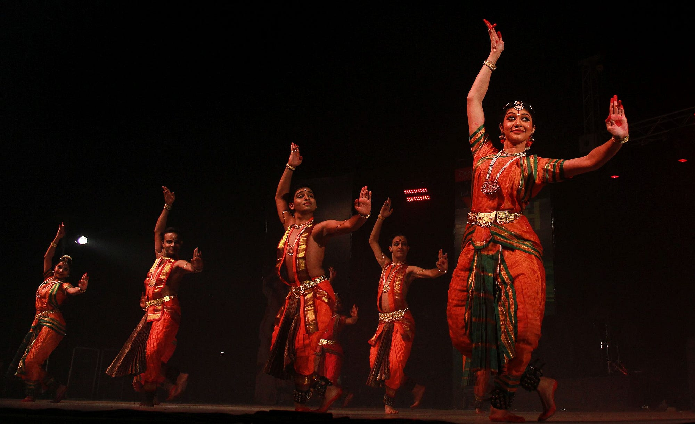

Bharatanatyam
Bharatanatyam is one of the oldest and most revered classical dance forms of India, originating in the temples of Tamil Nadu. This dance form, characterized by its grace, purity, and intricate movements, has a rich history that dates back over 2,000 years. Traditionally performed by the Devadasis, or temple dancers, Bharatanatyam was initially a form of spiritual expression, performed as an offering to the deities in Hindu temples. The dance is known for its fixed upper torso, bent legs, and intricate footwork, combined with expressive hand gestures (mudras) and facial expressions (abhinaya) that convey a wide range of emotions and stories. Bharatanatyam performances often depict themes from Hindu mythology, with the dancers portraying characters from ancient texts such as the Ramayana and Mahabharata. A typical Bharatanatyam recital follows a structured format, starting with the Alarippu, an invocatory piece that prepares both the dancer and the audience for the performance. This is followed by various other elements like Jatiswaram (a rhythmic sequence), Varnam (the centerpiece of the performance, combining narrative and dance), Padams (expressive pieces that depict the lyrical beauty of the dance), and finally, the Thillana, a joyful conclusion marked by lively, intricate movements. The costume worn by Bharatanatyam dancers is elaborate and colorful, consisting of a saree with pleats that fan out during movement, along with traditional jewelry and makeup that enhances the dancer's expressions. The anklets with small bells, known as ghungroos, accentuate the rhythmic footwork, creating a harmonious blend of sound and movement. Bharatanatyam is not just a dance form but a profound medium of storytelling and expression, deeply rooted in Indian culture and spirituality. Over the centuries, it has evolved and adapted, moving from temple courtyards to global stages, while retaining its essence as a dance of devotion and discipline.